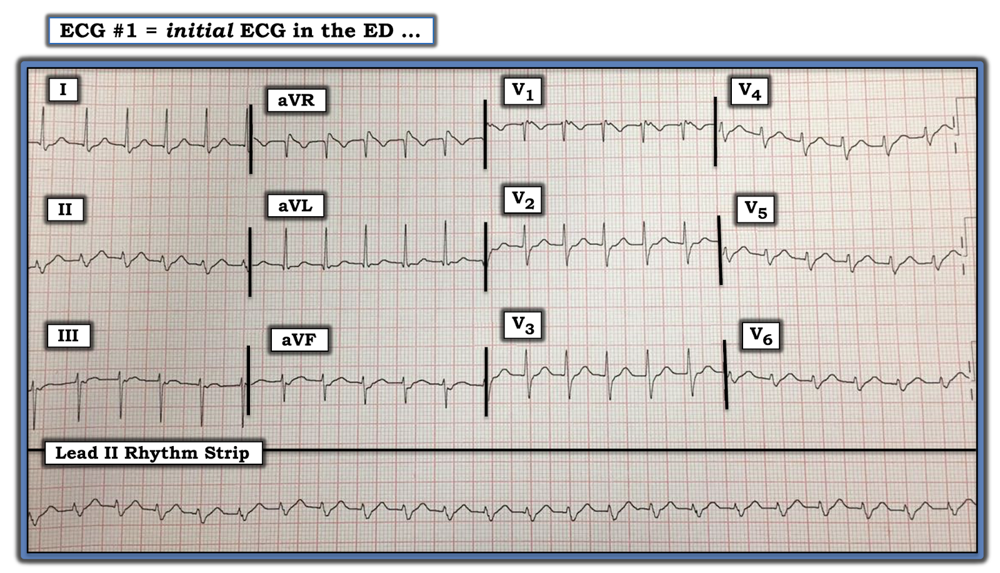
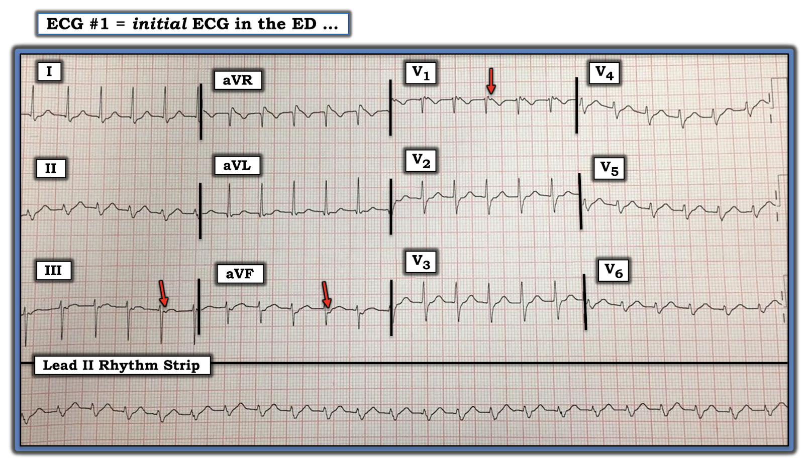
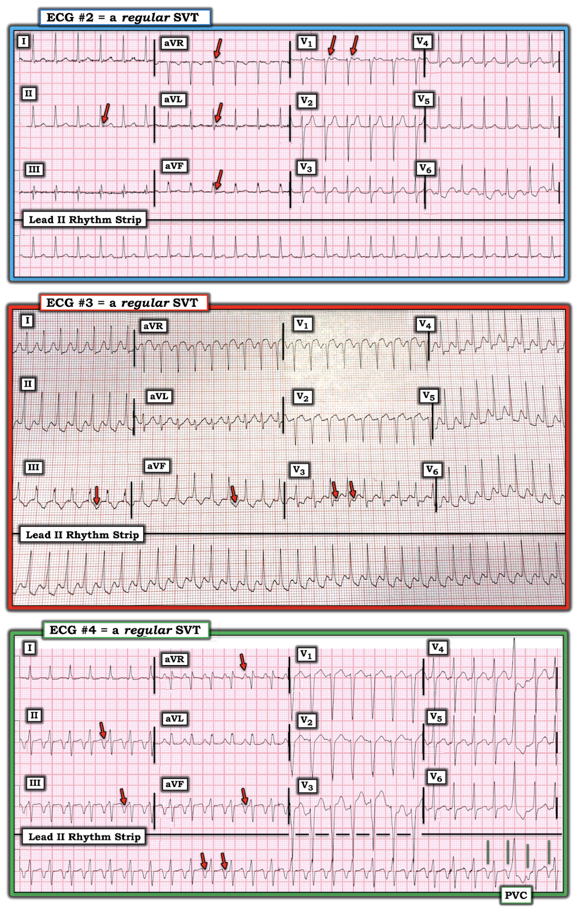
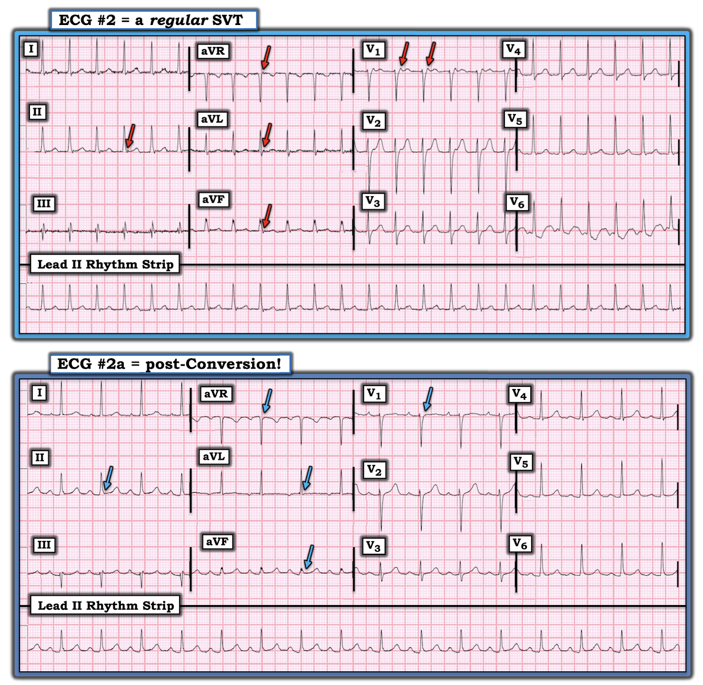
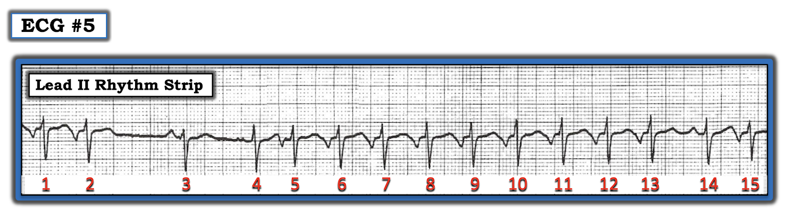
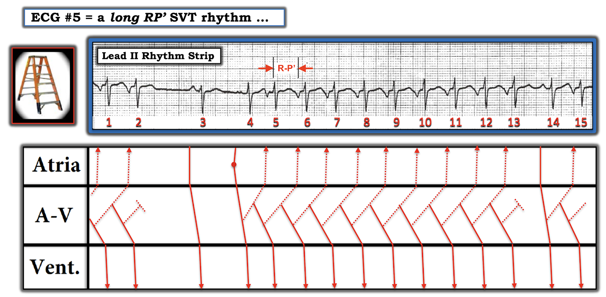

ECG Blog #240 — SVT đều thuộc loại nào?
Bài blog hôm nay bàn về cách đánh giá SVT (nhịp nhanh trên thất – SupraVentricular Tachycardia) đều. Bệnh nhân có điện tâm đồ trong Hình-1 đến khám vì "hồi hộp đánh trống ngực". Huyết động của anh ấy ổn định.
- Bạn đọc điện tâm đồ trong Hình-1 như thế nào?
- Và — Bạn có thể cho biết cơ chế của nhịp này không?
- T.B. (P.S.) — Trong các ĐIỂM THEN CHỐT (PEARL) được liệt kê, có bao nhiêu điểm là mới với bạn?


=======================================
LƯU Ý: Đến đây, một số bạn đọc có thể muốn nghe ECG Audio PEARL dài 4:20 phút trước khi đọc Suy nghĩ của tôi về điện tâm đồ trong Hình-1. Bạn cứ thoải mái tham khảo Suy nghĩ của tôi về bản ghi này bất cứ lúc nào (nằm bên dưới ECG MP-55).
=======================================

ECG Media PEARL #55 (4:20 phút Audio) hôm nay — thuật ngữ "SVT" nghĩa là gì? Audio Pearl này ôn lại ngữ nghĩa và cách áp dụng thuật ngữ này trên lâm sàng.
SUY NGHĨ BAN ĐẦU CỦA TÔI về điện tâm đồ #1:
Như thường lệ — tôi tiếp cận việc đọc nhịp một cách có hệ thống bằng cách xem xét 5 thông số MẤU CHỐT trong cách tiếp cận Ps, Qs & 3Rs (Xem ECG Blog # 185).
- LƯU Ý: Không cần đánh giá 5 thông số theo đúng thứ tự (tức là, tôi thường xem độ rộng QRS hoặc tính đều của nhịp trước khi tìm sóng P — tùy xem thông số nào trong 5 thông số là dễ đánh giá nhất trên bản ghi đang xem).
Quá trình suy nghĩ tuần tự của tôi đối với nhịp trong Hình-1 như sau:
- Phức bộ QRS hẹp — nên nhịp này là nhịp trên thất.
- Không có sóng P xoang (tức là, không có sóng P dương ở chuyển đạo II — dù vậy, như sẽ bàn ngay sau đây — dường như có thể có những dấu hiệu khác của hoạt động nhĩ).
- Nhịp thất Đều (Regular).
- Khoảng R-R dài hơn 2 ô lớn một chút — nên Tần số (Rate) của nhịp chỉ dưới 150/phút.
NHẬN ĐỊNH: Nhịp trong Hình-1 là một nhịp SVT đều tần số ~140/phút — nhưng không có dấu hiệu rõ ràng của sóng P xoang.
- Xem phần còn lại của điện tâm đồ — có trục lệch trái rõ (phù hợp với LAHB) — không lớn buồng tim — vùng chuyển tiếp sớm (tức là, chiều cao sóng R đã bằng độ sâu sóng S ngay từ khoảng giữa chuyển đạo V1-đến-V2) — và — một số bất thường ST-T không đặc hiệu (có thể liên quan đến tần số — và có lẽ không phải cấp tính).
ĐIỂM THEN CHỐT (PEARL) #1: Việc nhận ra nhịp trong Hình-1 là một SVT đều — nhưng không có dấu hiệu rõ ràng của sóng P xoang (tức là, không có sóng P dương chắc chắn ở chuyển đạo II) — cần gợi ta nghĩ đến DANH SÁCH chẩn đoán phân biệt sau:
- i) Nhịp nhanh xoang (NẾU có khả năng sóng P xoang đang ẩn trong sóng ST-T đứng trước);
- ii) Một SVT vào lại (hoặc là AVNRT nếu vòng vào lại nằm gọn trong nút AV — hoặc AVRT nếu có sự tham gia của một AP [đường phụ – Accessory Pathway] nằm ngoài nút AV);
- iii) Nhịp nhanh nhĩ (ATach);
- iv) Cuồng nhĩ (AFlutter) với dẫn truyền AV 2:1.
Điểm MẤU CHỐT: Dù các bệnh cảnh khác cũng có thể tạo ra SVT đều (tức là, nhịp nhanh vào lại nút xoang nhĩ, nhịp nhanh bộ nối) — trên thực hành chúng ít gặp hơn nhiều. Vì vậy, nhớ nghĩ đến 4 bệnh cảnh trong DANH SÁCH trên mỗi khi gặp một nhịp SVT đều không có dấu hiệu rõ ràng của sóng P xoang — sẽ giúp ích rất nhiều cho việc xác định đúng chẩn đoán.
- LƯU Ý: Phần lớn các nhịp SVT có phức bộ QRS hẹp. Tuy vậy — một nhịp SVT có thể có QRS rộng nếu hoặc có blốc nhánh từ trước hoặc có dẫn truyền lệch hướng do tần số nhanh.
ĐIỂM THEN CHỐT (PEARL) #2: Tần số tim giúp ích thế nào trong chẩn đoán SVT:
- Nhịp nhanh xoang thường không vượt quá 160-170/phút ở một người lớn "đang nằm" (tức là, một bệnh nhân bạn đang khám, không phải vừa mới chạy xong). Điều này không có nghĩa là nhịp nhanh xoang không bao giờ nhanh hơn 170/phút — mà chỉ gợi ý rằng khi tần số của nhịp SVT đều bạn đang đánh giá vượt hẳn khoảng tần số này — thì nhịp đó có lẽ không phải nhịp nhanh xoang. LƯU Ý: Ở trẻ em thì mọi quy tắc trên không còn đúng — vì nhịp nhanh xoang trên 200/phút ở trẻ em không phải là hiếm.
- Với AFlutter — đáp ứng thất thường gặp nhất ở bệnh nhân không đang điều trị thuốc chống loạn nhịp là ~150/phút (khoảng thường gặp ~140-160/phút). Đó là vì tần số nhĩ trong AFlutter chưa điều trị thường là ~300/phút (khoảng thường gặp ~250-350/phút) — và vì AFlutter chưa điều trị thường biểu hiện với dẫn truyền AV 2:1 — nên 300/2 ~150/phút. Do đó — NẾU tần số thất của nhịp SVT đều bạn đang đánh giá trên ~170-180/phút — thì AFlutter ít có khả năng hơn, vì tần số này nhanh hơn mong đợi đối với dẫn truyền AV 2:1, lại quá chậm đối với dẫn truyền AV 1:1.
- LƯU Ý: Khoảng ~140-160/phút này là dành cho AFlutter chưa điều trị. Bệnh nhân đã dùng thuốc chống loạn nhịp có thể có tần số nhĩ của cuồng nhĩ chậm hơn (và do đó đáp ứng thất chậm hơn).
- Nên nhớ rằng ATach là nguyên nhân ít gặp hơn của một SVT đều tuyệt đối, nhất là ở người trẻ đến trung niên vốn khỏe mạnh. ATach hay gặp hơn ở bệnh nhân được chuyển đi làm EP (thăm dò điện sinh lý – ElectroPhysiologic testing) — và ở người lớn tuổi có SSS (hội chứng suy nút xoang – Sick Sinus Syndrome). Tôi đưa ATach vào DANH SÁCH chẩn đoán phân biệt ở trên cho đầy đủ — nhưng cần biết rằng nó sẽ không hay gặp bằng AFlutter và các SVT vào lại.
- Vì vậy — NẾU tần số của một SVT đều không có dấu hiệu rõ ràng của sóng P xoang nhanh hơn đáng kể so với 160-170/phút — thì một nhịp SVT vào lại (tức là, AVNRT hoặc AVRT) trở thành chẩn đoán có khả năng nhất. Tuy nhiên, NẾU tần số của SVT đều gần với 150/phút (tức là, 140-160/phút) — thì bất kỳ bệnh cảnh nào trong 4 chẩn đoán thuộc DANH SÁCH trên đều có thể xảy ra ( = nhịp nhanh xoang — AVNRT-AVRT — ATach — AFlutter).
ĐIỂM THEN CHỐT (PEARL) #3: Các đặc điểm hữu ích khác cho chẩn đoán:
Ngoài tần số thất của một nhịp SVT đều — còn có một số dấu hiệu điện tâm đồ khác có thể giúp chẩn đoán phân biệt. Các dấu hiệu này gồm:
- Phát hiện hoạt động nhĩ! — Tôi đã nhiều lần trình bày việc dùng compa đo (calipers) có thể giúp phát hiện dẫn truyền AV 2:1, dấu hiệu chẩn đoán AFlutter (tức là, Xem phần bàn luận của tôi trong bài đăng ngày 12 tháng 11 năm 2019 trên Dr. Smith's ECG Blog). Như tôi sẽ bàn ngay sau đây — việc phát hiện hoạt động nhĩ ngược dòng có thể giúp chẩn đoán một nhịp SVT vào lại.
- Hãy tìm một chỗ “Ngắt” (hay thay đổi tinh tế) trong nhịp! — Chỉ cần một khoảng ngưng nhỏ trong nhịp SVT cũng có thể đủ để bộc lộ hoạt động nhĩ nền vốn bị che khuất bởi nhịp nhanh đều.
- Hãy tìm lúc “Khởi phát” (và/hoặc lúc kết thúc) của nhịp! — Manh mối MẤU CHỐT về nguyên nhân của một SVT thường nằm ở việc ghi lại được hoặc lúc bắt đầu và/hoặc lúc kết thúc SVT. ATach thường khởi phát từ từ, với ổ lạc chỗ tăng tốc dần (tức là, hiện tượng “khởi động” (warm-up)). Sau đó, nhịp có thể chậm dần (tức là, “hạ nhiệt” (“cool-down”)) khi kết thúc. Ngược lại — các nhịp SVT vào lại thường khởi phát bằng 1 hay nhiều PAC bị blốc dẫn truyền xuống một trong các đường dẫn truyền của nút AV, từ đó nhanh chóng thiết lập vòng vào lại khi xung động đi xuống theo đường còn lại. SVT vào lại thường khởi phát đột ngột (tức là, lý giải cho thuật ngữ trước đây dùng để gọi nhịp này = PSVT = SVT kịch phát – Paroxysmal SVT). Các nhịp SVT vào lại cũng thường kết thúc nhanh (dù có thể diễn ra qua vài nhát).
ĐIỂM THEN CHỐT (PEARL) #4: Dù mục tiêu của chúng ta là đưa ra chẩn đoán nhịp chính xác nhất có thể — "tin tốt" là trên thực tế — các biện pháp chẩn đoán và/hoặc điều trị ban đầu ngoài hiện trường hoặc tại khoa cấp cứu cho một nhịp SVT đều chưa phân định là tương tự nhau (tức là, cân nhắc nghiệm pháp cường phế vị — và/hoặc dùng thuốc ức chế nút AV như Verapamil/Diltiazem; thuốc chẹn ß, và có thể cả Adenosine).
==========================
CA BỆNH Tiếp tục:
Hãy xem lại nhịp trong Hình-1.
- CÂU HỎI: Bạn có thấy bất kỳ dấu hiệu nào của hoạt động nhĩ không?
TRẢ LỜI:
Chúng tôi đã nhấn mạnh rằng không thấy sóng P xoang trong Hình-1 — vì không có sóng P dương nào đi trước phức bộ QRS ở chuyển đạo II.
- Tuy vậy — các mũi tên ĐỎ trong Hình-2 cho thấy có sóng P ngược dòng!
ĐIỂM THEN CHỐT (PEARL) #5: Hoạt động nhĩ ngược dòng dễ nhận ra nhất nhờ thấy sóng P âm ở một hay nhiều chuyển đạo thành dưới. Sóng P âm này có thể thấy dưới dạng một khía ở phần cuối phức bộ QRS — một khía trên sóng ST-T — hoặc đôi khi nằm sau điểm kết thúc sóng T.
- Trong Hình-2 — hoạt động nhĩ ngược dòng thấy rõ nhất ở chuyển đạo III và aVF (dưới dạng một khía âm) — và ở chuyển đạo V1 (dưới dạng một khía dương nhỏ xuất hiện ngay sau sóng r' của phức bộ QRS). Tôi nghĩ rằng phần âm của QRS ở chuyển đạo II phản ánh sự kết hợp giữa sóng S + sóng P ngược dòng, dù ở chuyển đạo này khó phân biệt rõ một sóng P ngược dòng riêng biệt hơn.
- Điểm MẤU CHỐT: Khoảng cách từ lúc bắt đầu sóng R cho đến lúc bắt đầu sóng P ngược dòng — được gọi là khoảng RP'.
- NẾU thấy sóng P ngược dòng trong một nhịp SVT đều — và khoảng RP' ngắn (tức là, ≤70 msec.) — thì nhiều khả năng là AVNRT ( = nhịp nhanh vào lại nút nhĩ thất – AtrioVentricular Nodal Reentrant Tachycardia)! (González-Torrecilla và cs.: Ann Noninvasive Electrocardiol 16(1):85-95, 2011).
- Vì việc đo chính xác khoảng RP' thường khó — tôi coi khoảng RP' là "ngắn" (tức là, gợi ý AVNRT) — nếu sóng P ngược dòng hoặc tạo khía ở cuối QRS, hoặc xuất hiện rất sớm ngay sau QRS (như trong Hình-2, được chỉ bằng các mũi tên ĐỎ).


Xem kỹ hơn các sóng P ngược dòng:
Hãy xem 3 bản ghi trong Hình-3. Mỗi bản ghi đều cho thấy một nhịp SVT đều, trong đó không thấy rõ sóng P xoang (tức là, sóng P dương ở chuyển đạo II).
- Điện tâm đồ #2 — cho thấy một SVT đều với tần số chỉ dưới 150/phút. Phần sóng dương gần điểm giữa khoảng R-R ở chuyển đạo II gần như chắc chắn chỉ là sóng T. Lý lẽ chống lại việc có một sóng P xoang ẩn trong sóng T này — là điều đó sẽ khiến khoảng PR dài (tức là, ~0,26 giây) — trong khi nếu có thay đổi thì khoảng PR lại ngắn đi khi có nhịp nhanh. Dù tần số ~150/phút luôn phải khiến bạn nghĩ đến khả năng AFlutter — ngoại trừ có lẽ chuyển đạo V6, không chuyển đạo nào trong 11 chuyển đạo còn lại gợi ý dù chỉ một chút đến dẫn truyền AV 2:1. Thay vào đó — các mũi tên ĐỎ trong điện tâm đồ #2 gợi ý dẫn truyền nhĩ ngược dòng với khoảng RP' rất ngắn tạo khía ở phần cuối phức bộ QRS (với sóng dương ở chuyển đạo V1 — và — gợi ý có khía âm ở từng chuyển đạo thành dưới). Nhịp này khó là ATach — vì nếu phần sóng dương ở chuyển đạo V1 là một sóng P dẫn truyền xuôi thì nó sẽ tạo ra một khoảng PR dài quá mức. Như vậy chỉ còn lại nhịp SVT vào lại là chẩn đoán có khả năng cho điện tâm đồ #2 (tức là, AVNRT hoặc AVRT).
- Điện tâm đồ #3 — cho thấy một SVT đều với tần số ~210/phút. Trên thực tế, tần số này quá nhanh để là nhịp nhanh xoang. Nó cũng quá nhanh để là AFlutter với dẫn truyền AV 2:1 — vì khi đó tần số nhĩ = 210 X 2 = 420/phút, nhanh hơn nhiều so với tần số nhĩ tối đa của cuồng nhĩ. AFlutter với dẫn truyền AV 1:1 cực kỳ hiếm gặp, và tần số cuồng nhĩ 210/phút sẽ chậm một cách bất thường (trừ khi bệnh nhân đang dùng thuốc chống loạn nhịp). ATach có thể xảy ra, nhưng khi không có dấu hiệu rõ ràng của sóng P lạc chỗ — ATach ít có khả năng hơn nhiều so với một SVT vào lại, là nhịp phổ biến hơn nhiều (theo Pearl #2). Dù khó chứng minh chỉ từ một bản ghi này — tôi nghĩ rằng các mũi tên ĐỎ trong điện tâm đồ #3 (đánh dấu những sóng âm có khả năng ở các chuyển đạo thành dưới, với chỗ gấp góc sắc ở chuyển đạo V3) — là dẫn truyền nhĩ ngược dòng với khoảng RP' dài vừa phải, xuất hiện khá xa sau phức bộ QRS (trong phần sau của đoạn ST).
- Điện tâm đồ #4 — cho thấy một SVT đều với tần số ~160/phút. Có một đoạn dốc lên chậm, từ từ tới và vượt qua đoạn ST, dẫn tới một sóng P âm rất sâu (được đánh dấu bằng mũi tên ĐỎ) đứng trước ở từng chuyển đạo thành dưới. Sóng đứng trước QRS này dương ở chuyển đạo aVR. Sóng P âm ở các chuyển đạo thành dưới loại trừ nhịp nhanh xoang. Không có hoạt động nhĩ 2:1 loại trừ AFlutter. Về cơ bản, chúng ta còn phải chọn giữa ATach (khi đó ta phải giả định có những sóng P âm khổng lồ) với AVNRT, trong đó có dẫn truyền nhĩ ngược dòng với khoảng RP' rất dài.


Khoảng RP' cho chúng ta biết gì trong Hình-3:
MẤU CHỐT để xác định nguyên nhân có khả năng của từng nhịp SVT đều trong Hình-3 nằm ở độ dài tương đối của khoảng RP'.
- Điện tâm đồ #2 trong Hình-3 cho thấy khoảng RP’ rất ngắn, trong đó sóng P ngược dòng làm biến dạng phần cuối phức bộ QRS. Điều này gần như chẩn đoán thể "chậm-nhanh" của AVNRT — trong đó xung động đi xuống trước theo đường "chậm" của nút AV — rồi quay ngược lên theo đường "nhanh" của nút AV. Chính vì xung động quay ngược lên (tức là, ngược dòng) theo đường “nhanh” của nút AV mà khoảng RP’ ngắn như vậy. Thể AVNRT “chậm-nhanh” này là thể AVNRT phổ biến nhất, phổ biến đến mức khi chỉ nói “AVNRT” thì chúng ta thường mặc định là dẫn truyền “chậm-nhanh”.
- Điện tâm đồ #3 trong Hình-3 cho thấy khoảng RP' dài vừa phải. Điều này gợi ý có thể có một AP (đường phụ – Accessory Pathway) tham gia vào vòng vào lại — và loại SVT vào lại ở đây là AVRT. Vì trong AVRT, AP nằm ngoài nút AV — thời gian để đi hết vòng vào lại và dẫn truyền ngược về nhĩ (ngược dòng) dài hơn so với khi toàn bộ vòng vào lại nằm gọn trong nút AV. Do đó, sóng P ngược dòng thường xuất hiện trong đoạn ST, thay vì tạo khía ở phần cuối phức bộ QRS. Một điện tâm đồ theo dõi sau đó được ghi ở bệnh nhân này, và quả thật cho thấy WPW (Xem Bình luận của tôi trong bài đăng ngày 16 tháng 10 năm 2019 trên Dr. Smith's ECG Blog).
- Điện tâm đồ #4 trong Hình-1 hoặc cho thấy khoảng RP’ rất dài hoặc là một nhịp nhanh nhĩ. Dù để phân biệt chắc chắn giữa ATach lạc chỗ với một nhịp SVT vào lại cần phải thăm dò điện sinh lý (EP) — tôi nghiêng về chẩn đoán SVT vào lại vì: i) hình dạng của các đoạn ST trong điện tâm đồ #4, dẫn tới sóng âm lớn được đánh dấu bằng các mũi tên ĐỎ, trông giống hoạt động ngược dòng hơn; và, ii) Nếu nhịp này là ATach lạc chỗ, chúng ta sẽ phải giả định có những sóng P âm khổng lồ! Vì vậy — NẾU chúng ta thật sự đang thấy một khoảng RP' rất dài trong điện tâm đồ #4 — thì đây sẽ là thể "nhanh-chậm" ít gặp hơn nhiều của AVNRT — trong đó xung động đi xuống trước theo đường “nhanh” của nút AV — rồi quay ngược lên theo đường “chậm” của nút AV. Dẫn truyền ngược dòng lên theo đường “chậm” của nút AV giải thích cho khoảng RP’ rất dài.
ĐIỂM THEN CHỐT (PEARL) #6: Hãy để ý PVC ở gần cuối dải nhịp dài chuyển đạo II trong điện tâm đồ #4. Điều này minh họa một khái niệm đã nêu ở Pearl #3 — đó là manh mối về nguyên nhân thường được tìm thấy khi có một "chỗ ngắt" trong nhịp SVT nền.
- Lưu ý rằng hoạt động nhĩ ngược dòng từ vòng vào lại nút AV "nhanh-chậm" vẫn tiếp tục không bị ảnh hưởng bởi PVC (các đường thẳng đứng màu XANH LÁ trong Hình-3).
- Việc thấy một hay nhiều PVC trong lúc đang có nhịp SVT vào lại mà không làm chuyển nhịp, ủng hộ AVNRT hơn là AVRT xuôi chiều. Đó là vì một xung động sớm xuất phát từ tâm thất dễ cắt đứt một SVT vào lại (như AVRT) hơn nhiều khi một phần của chu trình đi qua tâm thất (qua đường phụ) trên đường quay về nút AV.
- Ngược lại — chu trình vào lại trong AVNRT nằm hoàn toàn trong nút AV, và do đó ít có khả năng bị PVC "xâm nhập" và cắt đứt hơn nhiều.
- Điều cốt lõi: Dù cần thăm dò điện sinh lý (EP) để chẩn đoán xác định — tôi rất nghi ngờ nguyên nhân của nhịp SVT trong điện tâm đồ #4 là thể AVNRT "nhanh-chậm" chứ không phải AVRT hay ATach lạc chỗ.
Trợ giúp từ bản ghi sau chuyển nhịp:
Điều quan trọng là luôn ghi lại điện tâm đồ sau khi đã chuyển về nhịp xoang (Hình-4). Đó là vì có khi chỉ xác định chắc chắn được nguyên nhân SVT sau khi so sánh điện tâm đồ trong và sau cơn nhịp nhanh.
- ĐIỂM THEN CHỐT (PEARL) #7: Cách TỐT NHẤT để chứng minh rằng những sóng khả nghi trong lúc có nhịp SVT thật sự phản ánh dẫn truyền nhĩ ngược dòng — là ghi một bản ghi sau chuyển nhịp. Lưu ý rằng hoạt động nhĩ ngược dòng trong lúc có SVT (các mũi tên ĐỎ trong Hình-4) — không còn nữa sau khi chuyển về nhịp xoang (các mũi tên XANH DƯƠNG giờ cho thấy chỗ chuyển tiếp trơn tru từ cuối QRS sang đầu đoạn ST). Cách giải thích duy nhất có thể là các mũi tên ĐỎ biểu thị sóng P ngược dòng từ một chu trình vào lại có khoảng RP' rất ngắn — nghĩa là nhịp trong điện tâm đồ #2 là AVNRT.


Cơ chế của thể AVNRT "nhanh-chậm":
Cuối cùng — Hãy xem nhịp trong Hình-5.
- CÂU HỎI: Bạn có thể giải thích điều gì đang diễn ra trong Hình-5 không?


TRẢ LỜI:
Giản đồ bậc thang (laddergram) trong Hình-6 cho thấy cơ chế vận hành của nhịp SVT trong điện tâm đồ #5. Điều này minh họa một khái niệm khác đã nêu ở Pearl #3 — đó là lúc khởi phát và/hoặc lúc kết thúc của nhịp SVT có thể cung cấp manh mối vô giá về nguyên nhân.
- Lưu ý rằng chúng ta thấy được lúc khởi phát cơn nhịp nhanh trong Hình-6. Sau một nhát xoang (tức là, nhát #3 trong Hình-6) — một PAC (tức là, nhát #4) khởi động quá trình.
- Có lẽ PAC này gặp đường chậm của nút AV đang sẵn sàng cho dẫn truyền ngược dòng đúng vào lúc nó đang đi xuống tâm thất (tức là, các đường chấm, xiên ở Tầng Nút AV trong Hình-6). NẾU thời điểm “vừa khớp” (như thể hiện trong giản đồ bậc thang này) — thì một vòng vào lại sử dụng đường chậm của nút AV (tạo ra khoảng RP’ rất dài) có thể được thiết lập.
- Tôi không chắc vì sao AVNRT “nhanh-chậm” này kết thúc sau nhát #13 (có lẽ vì khoảng R-R của nhát #12-13 ngắn hơn một chút so với các khoảng R-R trước đó trong cơn nhịp nhanh?).
- Sau 1 nhát xoang ( = nhát #14) — có vẻ như AVNRT “nhanh-chậm” sắp bắt đầu trở lại.
ĐIỂM THEN CHỐT (PEARL) #8: ATach thường khởi phát với sự tăng tốc từ từ của một ổ nhĩ lạc chỗ (tức là, hiện tượng "khởi động" (warm-up)). Nó thường kết thúc bằng sự giảm tốc từ từ (tức là, hiện tượng "hạ nhiệt" (cool-down)). Đây không phải là điều chúng ta thấy trong Hình-6!
- Các nhịp SVT vào lại thường khởi phát bằng một hay nhiều PAC, tình cờ gặp một trong các đường dẫn truyền của nút AV đang sẵn sàng cho dẫn truyền ngược dòng. Điều này khởi động chu trình vào lại.
- Không có "khởi động" (warm-up) trong Hình-6. Sau một nhát ngược dòng — một khoảng R-R vào lại hằng định được thiết lập cho 8 nhát trong cơn SVT tiếp theo (tức là, các nhát #6-đến-13).
- Không có "hạ nhiệt" (cool-down). Thay vào đó — chúng ta thấy chuyển về nhịp xoang đột ngột ở nhát #14 (dù ngay nhát kế tiếp dường như sắp khởi động một cơn khác).
- Sự kết thúc đột ngột tương tự (tức là, không có "hạ nhiệt") cũng thấy ở đầu điện tâm đồ #5 (SVT dừng ngay sau nhát #2).
- Điều cốt lõi: Trình tự "khởi phát" và "kết thúc" của nhịp SVT trong Hình-6 là điển hình cho thể vào lại "nhanh-chậm" ít gặp của AVNRT.


================================
Các bài ECG Blog Liên quan đến ca bệnh hôm nay:
- ECG Blog #185 — Ôn lại cách tiếp cận Ps, Qs & 3Rs để đọc nhịp một cách có hệ thống.
- ECG Blog #188 — Ôn lại những điều cốt yếu để đọc (và/hoặc vẽ) giản đồ bậc thang, kèm ĐƯỜNG DẪN tới nhiều giản đồ bậc thang tôi đã vẽ và bàn chi tiết trong các bài blog khác.
- ECG Blog #229 — Vì sao AFlutter lại hay bị bỏ sót đến vậy?
- ECG Blog #137 — AFlutter với tỷ lệ dẫn truyền bất thường.
- ECG Blog #138 — AFlutter với nhịp nhanh nhĩ.
- ECG Blog #40 — Một SVT đều khác hóa ra là AFlutter.
- González-Torrecilla và cs.: Ann Noninvasive Electrocardiol 16(1):85-95, 2011 — Tổng quan về phân biệt AVNRT với AVRT và các nhịp SVT đều khác ở bệnh nhân không có WPW.
Những trang khác nơi tôi đã bàn về một số ca được trình bày trong bài blog hôm nay:
- Bài đăng ngày 6 tháng 3 năm 2020 trên Dr. Smith's ECG Blog.
- Bài đăng ngày 31 tháng 10 năm 2016 trên Dr. Smith's ECG Blog.
- Bài đăng ngày 16 tháng 10 năm 2019 trên Dr. Smith's ECG Blog.
- Mời bạn xem bài đăng ngày 12 tháng 11 năm 2019 trên Dr. Smith's ECG Blog — trong đó tôi đã bàn về một ca nhịp SVT đều (AFlutter) thuộc loại khác.